Getting started
Petrol board owner orientation
JETSURF's whole-board walkthrough — fuel mix, cooling, the pumps, the signal lights, the battery and ICU, storage, plane travel, and a flooded engine.
Watch guide →Step-by-step guides for the whole board — cleaning and storage through to a full engine rebuild — each with a video walkthrough and timestamped steps. Search or filter below, or scroll each row sideways.
Board playing up? Start with the troubleshooting finder → · FAQ
Riding season winding down? Read getting your board ready for winter →
No guides match that search. Try a different word, or hit All.
The manufacturer's own Service Tutorials series (#1–14) plus their owner, troubleshooting and tuning videos. Gas boards unless noted.
JETSURF's whole-board walkthrough — fuel mix, cooling, the pumps, the signal lights, the battery and ICU, storage, plane travel, and a flooded engine.
Watch guide →
Set up the board, the two-tap no-idle start, three shallow-water and two deep-water starts, standing up, and the after-ride flush.
Watch guide →
The cleaning attachment onto the cooling pin in the impeller, hose on, engine running for at least two minutes.
Watch guide →
What's in the package, the throttle booster, power modes, the battery capacity lights and safe-return mode, battery handling, cooling, and charging.
Watch guide →
The inspection-lid and decompression-chamber water checks, the start procedure, shallow- and deep-water starts, standing up, and the after-ride drain.
Watch guide →
Flushing salt and grit from the hull, jet, and electronics bay after every ride.
Watch guide →
Reading plug color, gapping, and swapping without cross-threading the head.
Watch guide →
Disconnecting the fuel, vent, and pump lines, freeing the strap, and lifting the tank out — then reassembling in order.
Watch guide →
Pulling the iCU for service, replacement, or a flight — fuel tank out, main and starter connectors, two holder screws.
Watch guide →
Pulling the freewheel off the engine and refitting it with fresh Loctite and the correct 11 Nm torque.
Watch guide →
Stripping the fuel, cable, and electrical connections, freeing the exhaust, and lifting the engine off its mounting rails.
Watch guide →
The full engine pull, then dropping the silencer, exhaust ball spring, retaining ring, and sliding the exhaust out.
Watch guide →
Setting the exhaust and engine back in the hull, dialing in coupler axial play, and refitting the throttle cable and covers.
Watch guide →
Pulling the starter off the engine and refitting it with blue Loctite and the correct clearance to the freewheel.
Watch guide →
Taking the throttle body and reed valve off, inspecting the reed petals against a light, and reassembling with fresh gaskets.
Watch guide →
Piston pin, connecting-rod bearing, washer orientation, ring alignment, and torquing the cylinder head to 7 Nm.
Watch guide →
The full case split — flywheel puller, bearing heat-fit, sealing O-rings, bolt-length order, and the 7 Nm case torque.
Watch guide →
One bolt, one connector — swapping the bilge pump out of its bracket.
Watch guide →
Puller and heat gun to get the flywheel hub off the crankshaft, then a new hub set with green and blue Loctite.
Watch guide →
Taking the handle off and refitting it — throttle, wiring, and kill-switch connections. Video up now, written steps soon.
Watch guide →
Clearing water from the cylinder with cleaning mode, then drying the plug and chamber so the engine starts again.
Watch guide →
Fitting the ignition timing sensor, finding the magnet ignition point, and adjusting ignition advance into the 0.080–0.160 range.
Watch guide →
Opening the board bag for the first time — foam protector, wheels, stand, documents, toolkit contents, magnets, and fins.
Watch guide →
Registering the board in the JETSURF app — download, scan, add to your garage, and confirm the initial pairing date.
Watch guide →
Fitting the main fin plate, the main FCS fin, and the two handed side fins — and taking them back off.
Watch guide →
Turning both foot pads around to switch the board between stances — cover bolts, 5 mm pad bolts, and the front/back bolt-length order.
Watch guide →
Pre-start engine-bay checks and the two-tap magnet-key start sequence — plus stopping the engine and powering off.
Watch guide →
Unfolding the stand into its X — longer legs on the bottom.
Watch guide →
Reading the telltale water spray, what to do if it stops, and how to tell a catalytic-converter board from a race board.
Watch guide →
The full after-ride wash — outside, engine bay without flooding the engine, bilge pump, engine flush with the adapter, and dry-out.
Watch guide →
The short list — fuel and oil at 50:1, a buoyancy aid, a helmet, and a wetsuit if the water's cold.
Watch guide →
Stance, the magnet start, and the progression from your stomach to your knees to your feet — plus the deep-water restart.
Watch guide →
Topping up the electronics battery — the red-tagged charge lead by the starter, and reading the red/green charger light.
Watch guide →
The full on-water recovery — get to shore, pull the plug, crank the water out, refit and restart.
Watch guide →
Fins, battery bay check, battery install flat, covers to the arrows, power-mode select, and a test start.
Watch guide →
Battery out, connectors covered, wash down, flush the cooling line, and open the motor compartment to dry.
Watch guide →
Covers off and parked, a storage-mode battery charge to ~50%, connector lube, and the battery out of the board.
Watch guide →
Wake the remote, then cycle the three speed modes with the large button. Same for Yacht and Race skateboards.
Watch guide →
Connecting the smart charger to the battery in its bag, and the four modes — standard, storage, travel, recovery.
Watch guide →
Inflate to 3.6 PSI, seat the board into the nose section, and strap it down at the handles and rear buckle.
Watch guide →
The maintenance is the same either way — the only difference in salt is washing the board more thoroughly.
Watch guide →
The schedule — after every ride, spark plug + main bearing every 6–10 hours, full shop service at 50 hours or 12 months.
Watch guide →
Dry it out, lube the engine bay, pull the fuel tank and vent the breather, prop the lid for airflow, and charge every 30 days.
Watch guide →
Fuel tank and iCU out for hand luggage, engine flushed dry, transport guards on, and the bag packed so nothing can move.
Watch guide →
The older screw-on side fins into slots, plus the four-screw main-fin plate. FCS-clip boards use the newer fins guide.
Watch guide →
The 2018–2019 multi-chemistry charger — what's in the box, the red-zip-tie connector, and charging in LiPo mode at 3S / 4200 V.
Watch guide →
Fuel, sensor, spark plug, starter, charge, and the freewheel test — before every ride and first when a board won't start.
Watch guide →
The older short walkthrough for pulling the ICU. Video up now; full steps are in the newer iCU guide.
Watch guide →Longer, more comprehensive workshop walkthroughs of JetSurf repairs from Rod Camp at Jetboard Australia — worth a subscribe.

The complete teardown and rebuild on a late-model DFI — engine out, exhaust out, the quieter exhaust fitted, the valve eccentric set, and running again.
Watch guide →
Carbureted GP boards — carb overhaul, mixture & pop-off settings, throttle-cable lube, and the fuel-tank breather valve test.
Watch guide →
The full after-salt routine — hose, engine-bay rinse, bilge-pump, engine flush done right, soap wash, engine-bay lube, and when flushing is actually needed.
Watch guide →
Testing the one-way bearing, stripping and re-greasing it with EP2, and identifying which of the three JetSurf clutch types you have.
Watch guide →
Tracing a salt-blocked cooling circuit branch by branch to a cylinder corroded past its O-ring groove — a case study in why the flush matters.
Watch guide →
How the ball valve keeps water out, cleaning it, the two incompatible end types, the bolt-on silencer upgrade, and reading a burned or leaking pipe.
Watch guide →
The pre-cradle carbureted engine — couplings off, the slotted mount bolt, the deleted drain valve and vacuum bilge pump, and priming a dry carb.
Watch guide →
Top and bottom end — crank, main bearings, the circlip-groove machining fix, piston, cylinder, head, coupling and starter clutch, back to life.
Watch guide →
Pull the pump, replace both sets of bearings and seals, dress a chewed impeller back to shape, reseal with RTV, and realign the coupling.
Watch guide →
The whole handle-and-cable unit out through the snorkel and a new one drawn back through — wiring, throttle-cable routing, and handle-length setup.
Watch guide →
Save a seized cable without replacing the handle — remove it, flush it through with a motorcycle oiler and graphite penetrant, re-route it, and set the free play.
Watch guide →
Why a leash matters in the surf, never leashing to the hand control or a single binding bolt, short-leash length, and a load-spreading under-binding mount.
Watch guide →
The complete yearly service on a late-model DFI — compression test, starter clutch, throttle cable, exhaust valve, bearings, impeller, fuel tank, spark plug.
Watch guide →
Confirm it's dead with the ICU cleanout switch and a bench test, get it out past the coupling, fit the right model, and set the gear backlash.
Watch guide →
Dual, race and heel-up ratchet — which board each comes on, what tops and bases interchange, and the front-V-binding trap when you upgrade.
Watch guide →General-care guides we're producing in-house — the everyday jobs the manufacturer series doesn't cover — plus tips and tricks added by the JETSURF community.
Eight boards, one hull family, a handful of real differences — what actually matters when you're picking one.
Read the guide →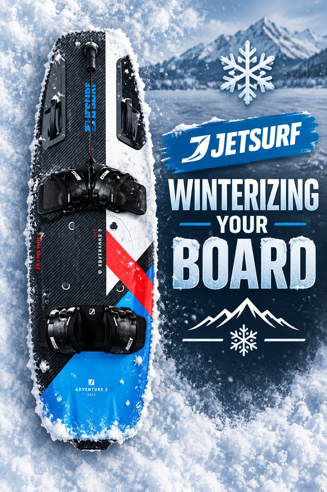
A seasonal overview for gas and electric boards — clean, store, and what to check before you're back on the water.
Read the guide →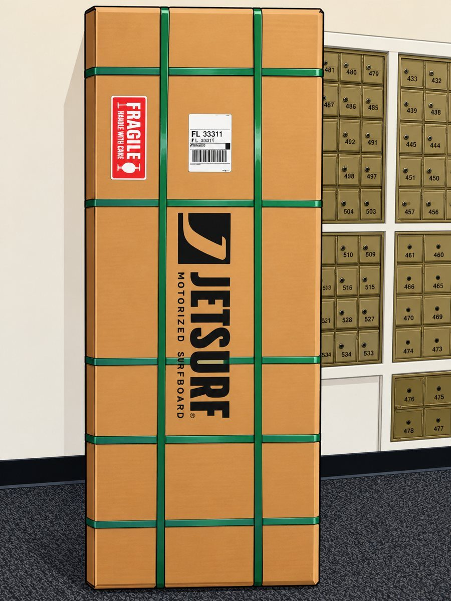
Packing it right, insuring it, and what to tell the carrier — so it doesn't become a damage or loss claim.
Read the guide →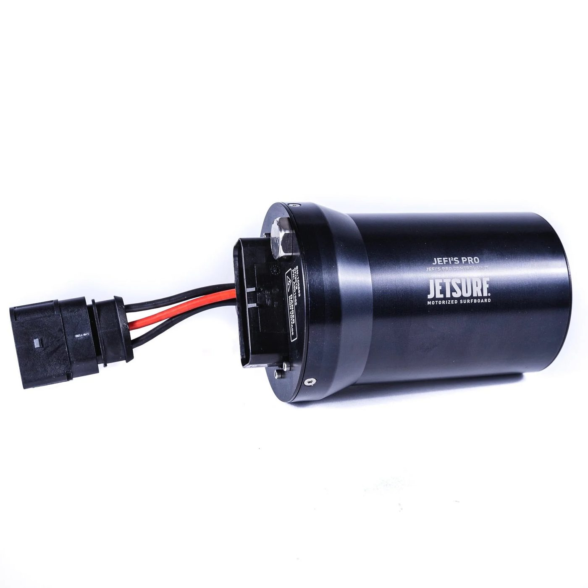
Why elevation changes how your board runs, and how to get your ICU flashed for where you actually ride.
Read the guide →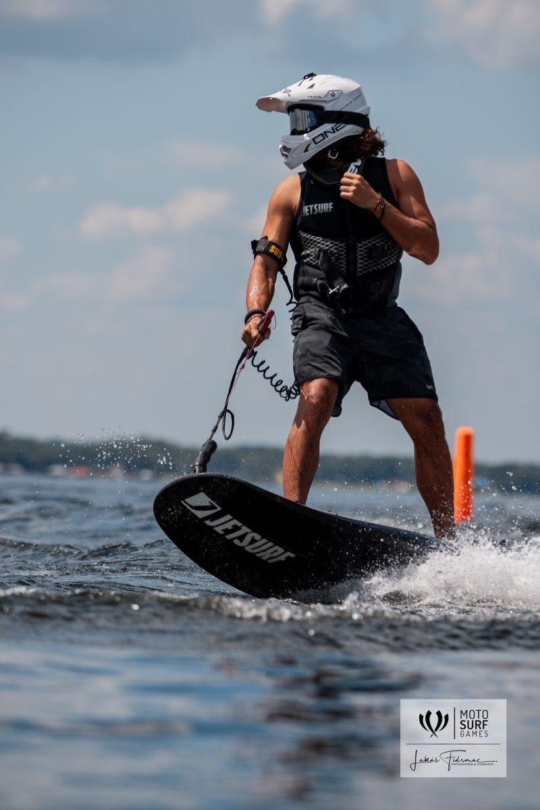
Warm-up to standing up, and the throttle-control mistake that trips up almost every beginner.
Read the guide →The 50:1 gas-to-oil ratio, exact measurements, a mix calculator, and the gear that makes it foolproof.
Read the guide →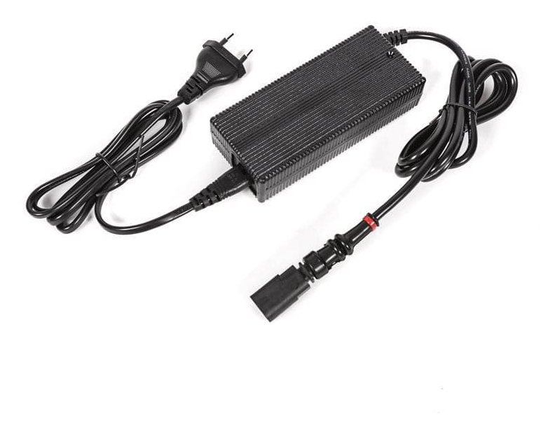
Which older boards need the 4-pin to 2-pin reduction, wall vs 12V charger, and how to hook it up.
Read the guide →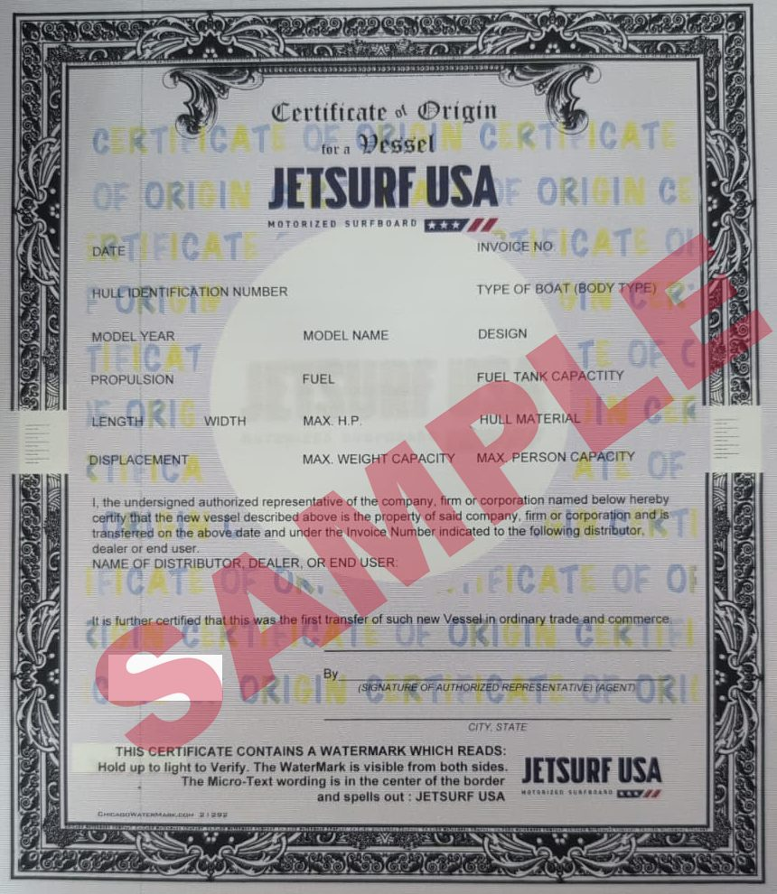
The Certificate of Origin, what to bring to the tax collector, fees, numbers and decal — plus used boards and missing paperwork.
Read the guide →The official JETSURF owner's manuals as PDFs, plus our own warranty guide at the end. The manuals come in two parts — Part A covers operation, riding and maintenance; Part B covers the board and engine description plus the full specifications. Keep both, and hand them over if you sell the board.
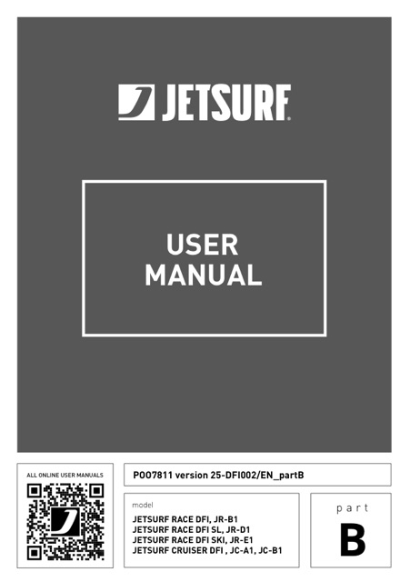
MSR NG 100 DFI engine. Manual versions 25-DFI004 (Part A) and 25-DFI002 (Part B).
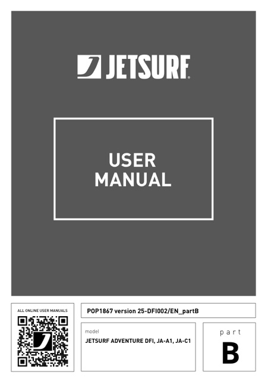
MSR NG 100 DFI engine. Manual versions 25-DFI004 (Part A, shared with the Race & Cruiser) and 25-DFI002 (Part B, Adventure JA-A1 / JA-C1). Covers both Adventure generations.
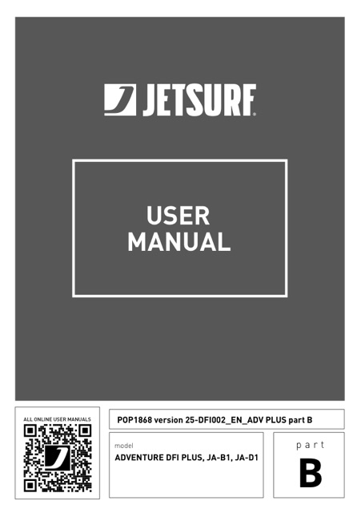
The larger Adventure (models JA-B1 / JA-D1). MSR NG 100 DFI engine with alternator. Manual versions 25-DFI005 (Part A) and 25-DFI002 (Part B). We don't stock this one yet — manual's here for owners who have it.
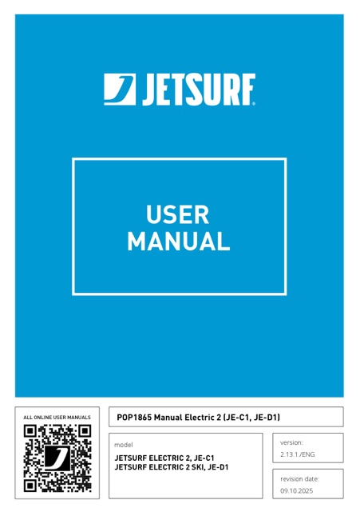
One manual covers both (models JE-C1 / JE-D1) — battery handling and charging, the charger display and error tones, riding modes and the Booster, after-ride draining, storage charge levels, and user maintenance. Version 2.13.1.
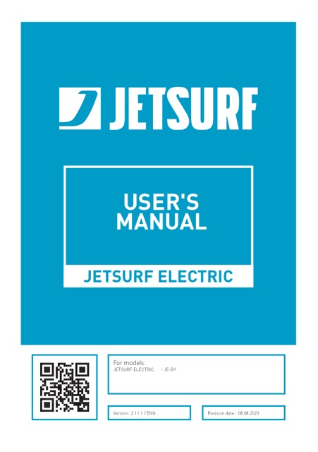
The earlier single-battery Electric — 2.9 kWh lithium-ion, 6 / 9 / 11 kW power modes, Booster, single-stage carbon jet pump. We don't stock this one yet — manual's here for owners who have it. Version 2.11.1.
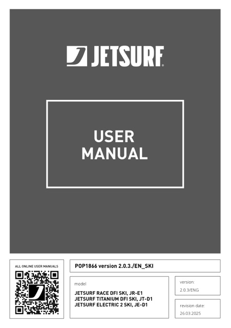
Attachment manual for all three Ski boards — Race DFI Ski, Titanium DFI Ski, Electric 2 Ski (JR-E1 / JT-D1 / JE-D1). Fitting the handlepole, setting bar height and angle, footpad positions, handlepole height limiter. Version 2.0.3.
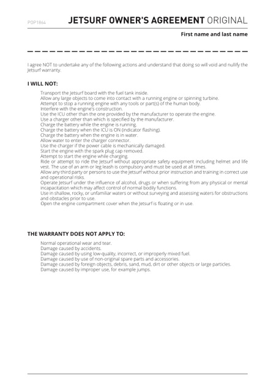
The handover form every owner signs — the "I will not" list of things that void the warranty (fuel tank in the board during transport, wrong charger or ICU, riding without helmet, life vest and leash, opening the engine cover while afloat, and more) and what the warranty doesn't cover. Worth reading whether or not you signed one. Version 25-DFI003.
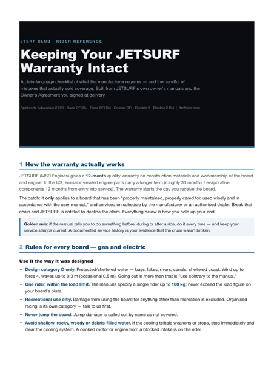
Our plain-language checklist of what JETSURF requires and the handful of mistakes that actually void coverage — universal rules plus gas-specific and electric-specific sections. Built from the manuals below and the Owner's Agreement.
The Titanium owner's manuals are going up as we get them.
We'll email you when each maintenance tutorial goes live. No spam, just wrench work.